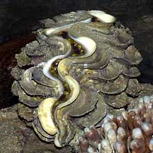
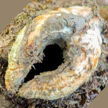
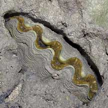
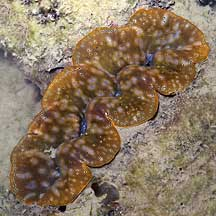
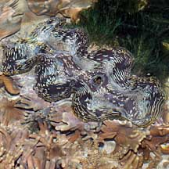
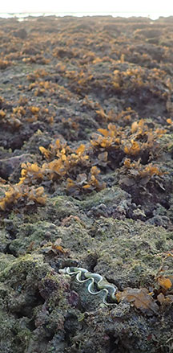
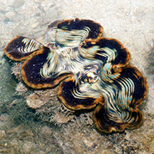
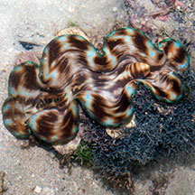

|
|
| bivalves text index | photo index |
| Phylum Mollusca > Class Bivalvia > Family Cardiidae |
| Giant
clams Subfamily Tridacninae updated May 2020
Where seen? These enormous clams are sometimes seen on our undisturbed Southern shores. Some burrow into coral rubble or among live coral and are thus easily overlooked. Others lie above but attached to coral rubble. What are giant clams? Giant clams belong to Family Cardiidae (True cockles), subfamily Tridacninae. Previously, it was placed in Family Tridacnidae. |
 The Fluted giant clam is usually firmly attached to a hard surface. Sisters Island, Jan 04 |
 Shell is anchored by a large byssus mass that emerges from a gap at the bottom. Seen here in this dead clam. Pulau Semakau (East), Aug 21 Photo shared by Vincent Choo on facebook. |
 The Burrowing giant clam are often embedded inside corals. Pulau Hantu, Mar 05 |
| Features: 15-40cm. Giant clams are among the largest bivalves to have ever existed on our planet! The two-part shell is thick and usually has a wavy opening that never closes completely. The shell opening faces the sunlight, while the hinged side is at the bottom. The shell is attached to a hard surface by a large byssus mass that emerges from a gap between the valves near the hinge. Some giant clams burrow into coral, with most of the shell hidden and only the shell opening facing sunlight. |
 Burrowing giant clam. Pulau Hantu, Feb 06 |
 Fluted giant clam. Pulau Jong, Nov 08 |
 Burrowing giant clam. Cyrene, Aug 18 |
 Fluted giant clam. Big Sisters Island, Jul 13 |
 Fluted giant clam. Terumbu Hantu, Jun 13 |
| What do they eat? Unlike most
other bivalves, the giant clam harbours symbiotic zooxanthellae (a
kind of single-celled algae) in its fleshy body. The zooxanthellae
produce food through photosynthesis which it shares with the clam.
To maximise the productivity of its "farm", the clam faces
the shell opening (and thus the body containing the algae) to sunlight. The shell opening never closes completely even at low tide, and the body is exposed. The body expands under water and appears like colourful thick lips in between the wavy shell opening. The brightly coloured spots in the body protect against excessive sun. The clam has transparent lenses that focus sunlight onto the algae that are found deeper in the flesh. The giant clam has an extensive digestive system to extract the nutrients produced by the symbiotic algae. And enlarged excretory organs to deal with the large load of by-products of the algae. Although giant clams are highly dependent on the symbiotic algae, they are still able to filter feed like other bivalves. Giant clam babies: Giant clams mature first as males then eventually become hermaphrodites, producing both eggs and sperm. Sperm is released first, probably to avoid self fertilisation. |
 |
| Giant myth: It is a mistaken belief that divers can be trapped underwater if the
giant clam closes over their foot or hand. Many of these peaceful
clams can't even close their shells completely. They certainly don't
eat people! More about this on the Psychedelic
Nature blog. Human uses: Giant clams are considered a delicacy and in some places, an aphrodisiac. The large shells of these magnificent creatures are often turned into tacky souvenirs like ash-trays. There are efforts to cultivate giant clams on a commercial basis so as to reduce over-collection of wild clams. Status and threats: Giant clams have been listed in CITES Appendix II since 1985. The Fluted giant clam (Tridacna squamosa) is listed as 'Endangered' on the Red List of threatened animals of Singapore. According to the Singapore Red Data Book: "Large specimens have virtually disappeared from our shores. Young specimens are occasionally but infrequently seen". Like other creatures of the intertidal zone, they are affected by human activities such as reclamation and pollution. Trampling by careless visitors and over-collection can also affect local populations of young clams. |
| Video clips
of Singapore Giant clams from links shared by Neo Mei Lin on her
blog. An animal behavior film project in partial fulfilment for NUS LSM4253 Animal Behaviour AY2008/09. Done by: Neo Meilin Pamela Soo Daniel Storisteanu Nicholas Yap |
| The Secrets Of The Giant Clam part 1: Introduction and Larval Movement |
| The secrets of
the Giant clam part 2: Righting |
| The secrets of the Giant clam part 3: Aggregation |
| The Secrets of the Giant Clam part 4: Squirting and conservation |
| Some Giant clams on Singapore shores |
Fluted giant clam |
| Subfamily
Tridacninae recorded for Singapore from Tan Siong Kiat and Henrietta P. M. Woo, 2010 Preliminary Checklist of The Molluscs of Singapore. in red are those listed among the threatened animals of Singapore from Davison, G.W. H. and P. K. L. Ng and Ho Hua Chew, 2008. The Singapore Red Data Book: Threatened plants and animals of Singapore. ^from WORMS
|
Links
|